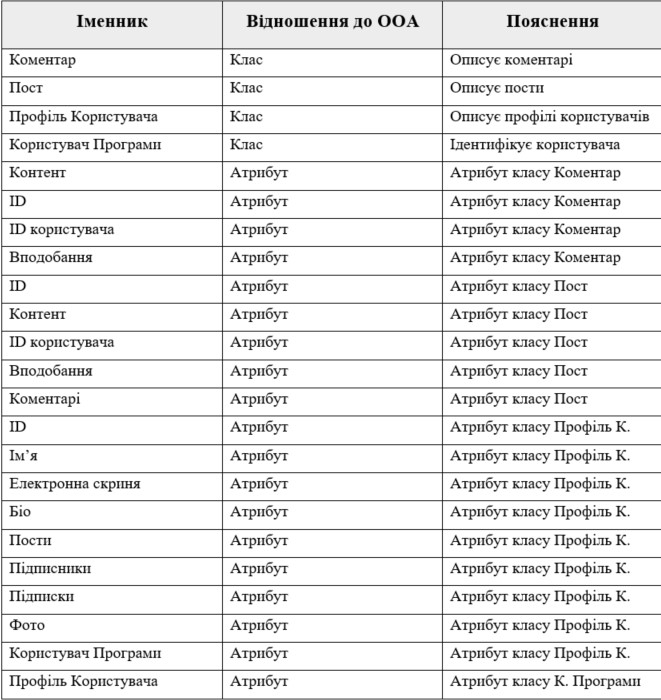

Опис об'єкта управління
Об'єктом управління є невеличка соціальна мережа.
При першому заході на сайт користувач має змогу переглянути різні пости користувачів. Тобто їхні думки, роздуми, факти і тд. Взаємодіяти будь-яким чином незареєестрований користувач не може. Спершу потрібно ввійти в систему.
Якщо користувач не має акаунта, і він вперше на сайті, то йому пропонується зареєструватись. Якщо ж він вже зараєстрований, то він має змогу ввійти в систему. Для входу потрібно ввести емейл користувача та пароль. При реєестрації потрібно ввести і інші дані користувача, такі як: біо, фотографія і тд.
Коли користувач вже ввійшов в систему, то він має змогу повністю взаємодіяти з функціоналом сайту. У нього появляється змога писати свої пости та реагувати на пости інших - вподобляти чи писати коментарі. При цьому інші користувачі так само отримують змогу реагувати на ваші пости. Користувач також отримує змогу підписуватись на інші профілі для того, щоб в майбутньому переглядати пости саме вибраних людей. До того ж є можливість видаляти свої пости та коментарі в разі потреби.
Адміністратор сайту має змогу блокувати різних користувачів та видаляти їх пости в разі потреби. Для того щоб зайти в ролі адміністратора потрібно ввести необхідні дані при вході в систему.
Мета розробки проекту
- отримання досвіду розробки подібної програми про соціальну мережу.
- надання люядм ще одної можливості обмінюватись думками.
Бізнес-задачі
- Написання посту
- Підписання на профіль
- Коментування
- Вподобання
Бізнес-процеси
- Видалення посту
- Переглянути профіль інших користувачів
- Відписування від іншого профілю
- Перегляд коментарів під постом
- Написання коментару
- Видалення коментару
- Вподобання посту
- Вподобання коментару
Сценарії дії системи
Користувач
- Користувач виконує вхід до системи
- Пише пост
- Видаляє пост
- Переглядає профілі інших
- Підписується на профілі інших
- Відписується від інших профілів
- Переглядає пости
- Переглядає коментарі
- Добавляє коментар
- Видаляє коментар
- Вподобляє коментар
- Вподобляє пост
Адміністратор
- Адміністратор виконує вхід до системи
- Отримує доступ даних користувачів
- Слідкує за порядком
- Блокує користувача
- Видаляє повідомлення
Таблиця обґрунтування класів
Таблиця обґрунтування методів
Діаграма об'єктів
Функціональні вимоги замовника - UML-діаграми
Діаграма класів
Моделювання процесу соціальної мережі Діаграма класів для проекту "Невеличка соціальна мережа". Було створено 27 класів та побудовані зв'язки між ними:
- ApplicationUser - UserIdentity — Наслідування, оскільки один об'єкт наслідує функціонал іншого
- ApplicationUser - UserProfile — Агрегація, оскільки один об'єкт може існувати без іншого
- UserProfile - UserRepository — Асоціація, оскільки один об'єкт не залежить від іншого
- Post - PostRepository — Асоціація, оскільки один об'єкт не залежить від іншого
- Comment - CommentRepository — Асоціація, оскільки один об'єкт не залежить від іншого
- CommentRepository - IRepository — Реалізація, оскільки один об'єкт реалізувує функціонал іншого
- PostRepository - IRepository — Реалізація, оскільки один об'єкт реалізувує функціонал іншого
- UserRepository - IRepository — Реалізація, оскільки один об'єкт реалізувує функціонал іншого
- CommentRepository - ApplicationDbContext — Агрегація, оскільки один об'єкт може існувати без іншого
- PostRepository - ApplicationDbContext — Агрегація, оскільки один об'єкт може існувати без іншого
- UserRepository - ApplicationDbContext — Агрегація, оскільки один об'єкт може існувати без іншого
- ApplicationUserManager - ApplicationUser — Асоціація, оскільки один об'єкт не залежить від іншого
- ApplicationUserManager - UserManager — Наслідування, оскільки один об'єкт наслідує функціонал іншого
- IUnitOfWork - ApplicationUserManager — Композиція, оскільки один об'єкт не може існувати без іншого
- IUnitOfWork - IRepository — Композиція, оскільки один об'єкт не може існувати без іншого
- IUnitOfWork - UnitOfWork — Реалізація, оскільки один об'єкт реалізувує функціонал іншого
- UnitOfWork - ApplicationDbContext — Агрегація, оскільки один об'єкт може існувати без іншого
- PostService - IUnitOfWork — Агрегація, оскільки один об'єкт може існувати без іншого
- CommentService - IUnitOfWork — Агрегація, оскільки один об'єкт може існувати без іншого
- UserService - IUnitOfWork — Агрегація, оскільки один об'єкт може існувати без іншого
- ApplicationUserService - IUnitOfWork — Агрегація, оскільки один об'єкт може існувати без іншого
- PostService - AutoMapper — Композиція, оскільки один об'єкт не може існувати без іншого
- CommentService - AutoMapper — Композиція, оскільки один об'єкт не може існувати без іншого
- UserService - AutoMapper — Композиція, оскільки один об'єкт не може існувати без іншого
- ApplicationUserService - AutoMapper — Композиція, оскільки один об'єкт не може існувати без іншого
- PostService - IPostService — Реалізація, оскільки один об'єкт реалізувує функціонал іншого
- CommentService - ICommentService — Реалізація, оскільки один об'єкт реалізувує функціонал іншого
- UserService - IUserService — Реалізація, оскільки один об'єкт реалізувує функціонал іншого
- ApplicationUserService - IApplicationUserService — Реалізація, оскільки один об'єкт реалізувує функціонал іншого
- OperationDetails - IPostService — Асоціація, оскільки один об'єкт не залежить від іншого
- OperationDetails - ICommentService — Асоціація, оскільки один об'єкт не залежить від іншого
- OperationDetails - IUserService — Асоціація, оскільки один об'єкт не залежить від іншого
- OperationDetails - IApplicationUserService — Асоціація, оскільки один об'єкт не залежить від іншого
- PostDTO - IPostService — Асоціація, оскільки один об'єкт не залежить від іншого
- CommentDTO - ICommentService — Асоціація, оскільки один об'єкт не залежить від іншого
- UserDTO - IUserService — Асоціація, оскільки один об'єкт не залежить від іншого
- UserDTO - IApplicationUserService — Асоціація, оскільки один об'єкт не залежить від іншого

Файлова структура проекту